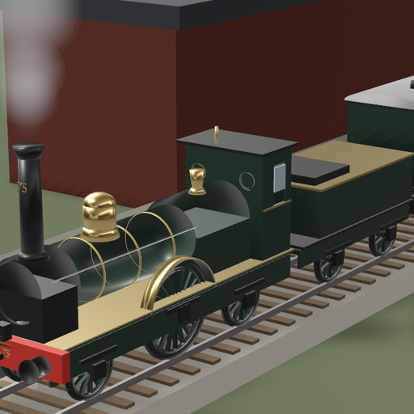
Rail Chronicle
Build Sweden's railway, one era at a time.
Tap to drive your first steam engine, then hire a crew, couple carriages and open the line station by station from Gothenburg to Stockholm. Every train you run and collect is a real Swedish locomotive or carriage, from Prins August of 1856 to the X 2000.
Free to play · iPhone · No account · Ads only if you choose a boost
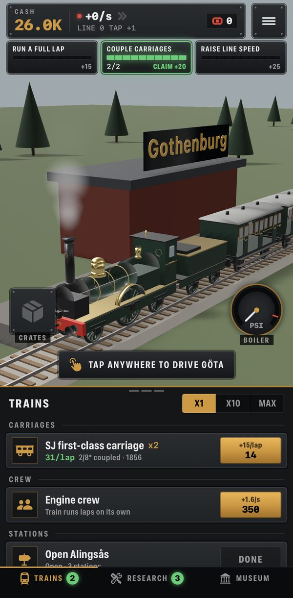
Screenshots
A miniature railway in your pocket
A 3D model railway you can orbit and zoom, that grows with every upgrade you buy.
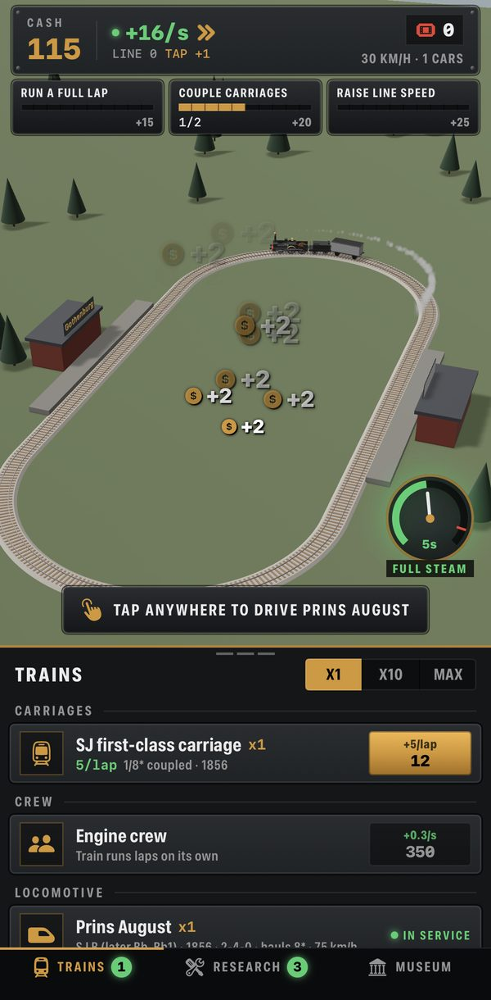
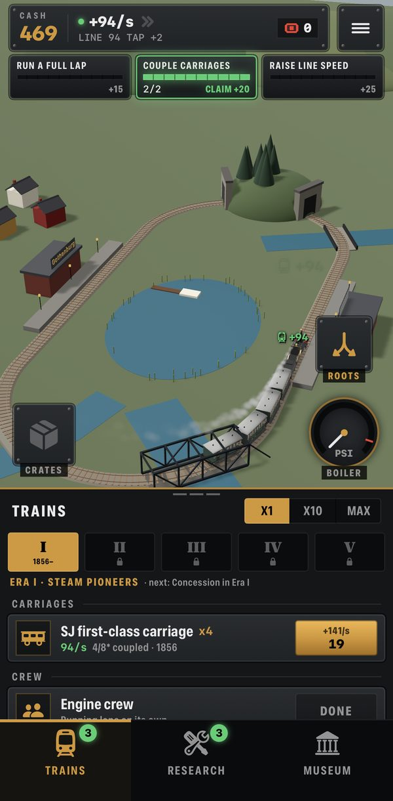
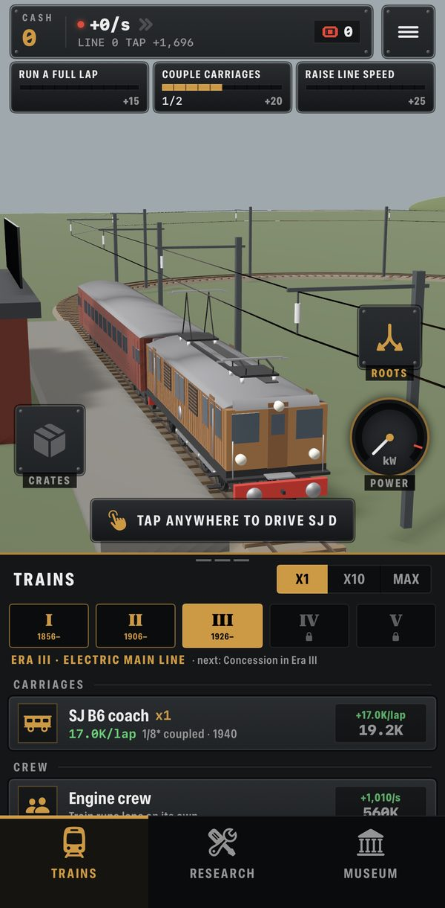
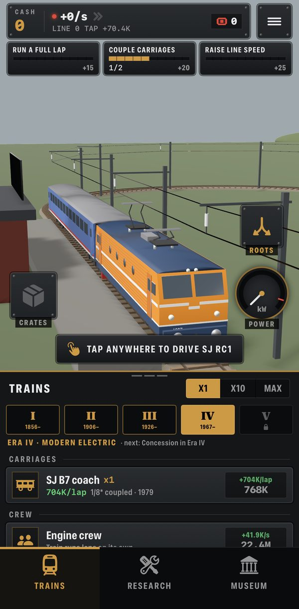
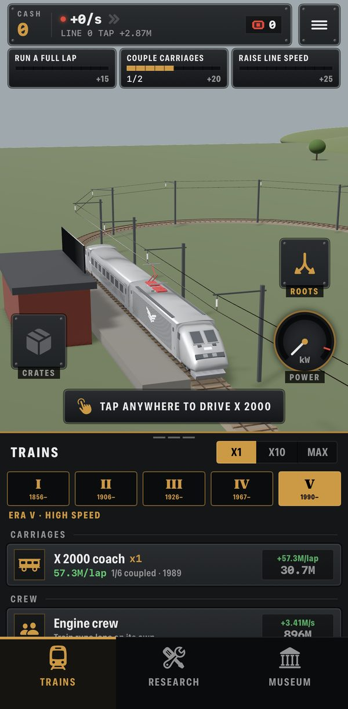
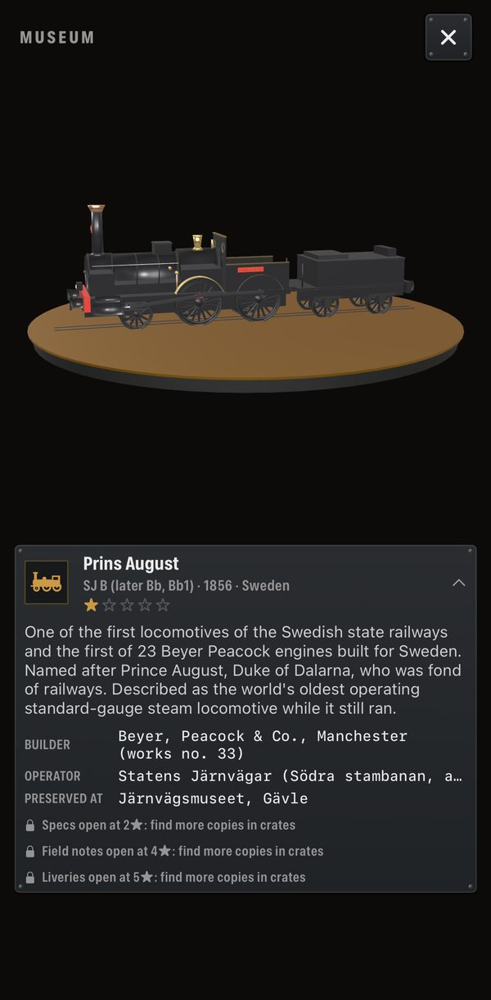
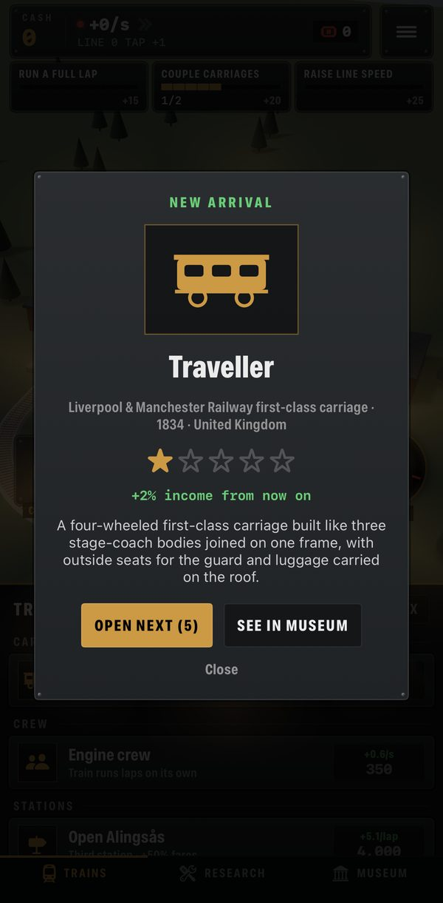
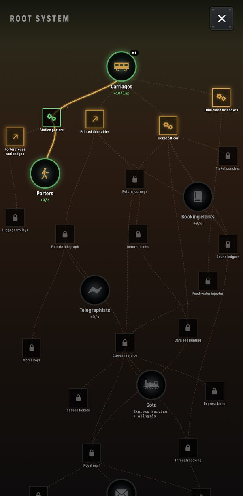
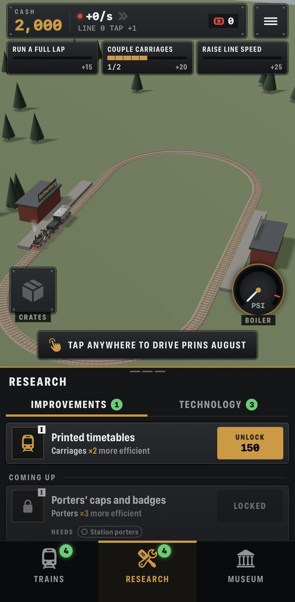
How it plays
From one tap to a main line
An idle game you can play in short bursts. Your railway keeps earning while you're away.
Tap to drive
At first your train only moves while you tap. Every lap pays a fare per carriage, and a full boiler gives a burst of full steam.
Hire the crew
Hire an engine crew and the train runs on its own. Couple more carriages, raise the line speed and put porters, clerks and telegraphists to work.
Open the line
Open real stations one at a time, from Gothenburg through Alingsås, Skövde and Hallsberg all the way to Stockholm.
Take a Concession
When the time is right, start the era over for a permanent income multiplier and Blueprint Crates, and open the next era.
Five eras, one line
Steam to high speed
The same railway, Västra stambanan between Gothenburg and Stockholm, across five eras. Each era is its own run with its own trains, stations and research, and the ones you leave keep earning.
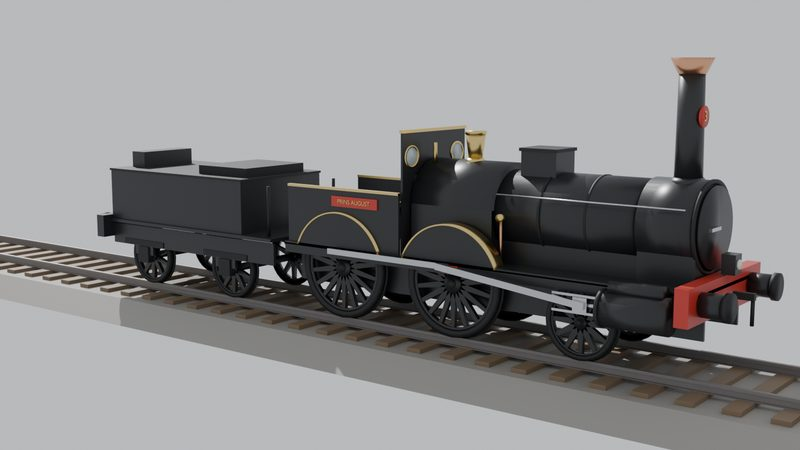
Era I · 1856–Steam pioneers
Start with Prins August, built by Beyer, Peacock & Co. in 1856 and one of the first locomotives of the Swedish state railways. Open Alingsås to bring in the express engine Göta.
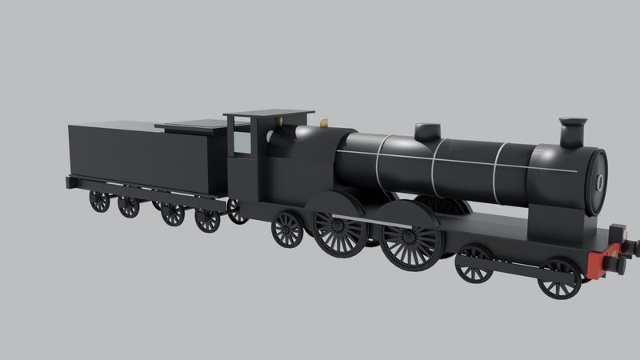
Era II · 1906–Express steam
The SJ A Atlantic of 1906, SJ's main-line express engine of the 1900s. No. 1001 is preserved at the railway museum in Gävle.
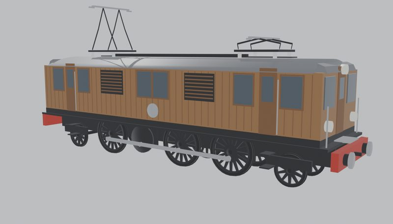
Era III · 1926–Electric main line
Research electrification to put up the overhead line, as on the real line in 1926, and hand the train to the rod-driven SJ D.
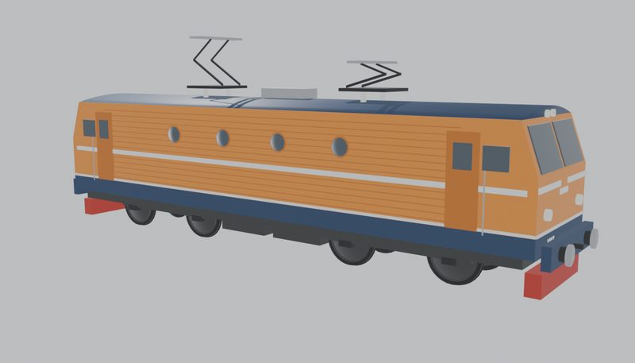
Era IV · 1967–Modern electric
The Rc1, first of ASEA's Rc family that became SJ's standard electric locomotive for decades, with B7 coaches.
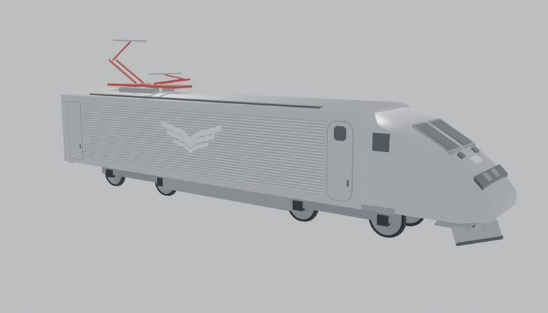
Era V · 1990–High speed
Research tilting coaches to put the X 2000 in service, Sweden's tilting train that leans into curves at up to 200 km/h.
The line: Gothenburg · Jonsered · Alingsås · Herrljunga · Falköping · Skövde · Töreboda · Hallsberg · Katrineholm · Södertälje · Stockholm
Only real trains
Nothing made up
Every locomotive and carriage in Rail Chronicle really ran, in the livery it really wore. The game is made by a Swedish train driver, and every fact is checked against sources.
- Museum cards with each vehicle's builder, year, specs and history.
- Unknown facts stay "Unknown" instead of being guessed.
- Collect stars to open specs, field notes and historical liveries.
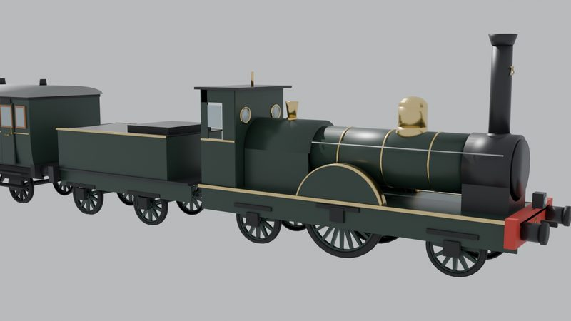
All aboard
Research and roots
Improvements multiply income and technology opens new things. Follow it all in the root system, a research tree that grows downward.
Scenery that pays
Buy a stone bridge over Säveån, Lake Mjörn, Billingen or the Göta Canal crossing. Each landmark appears on your model railway and boosts income.
The Museum
Open Blueprint Crates to collect real vehicles from the early railways, see them in a lit display cabinet and spin them on a brass turntable.
Fair free-to-play
Everything can be reached without paying. Earn Tickets at milestones for Time Warps, and watch an ad only if you want a 2× income boost. Tickets never buy trains, stars or crates.
Support
Found a bug, spotted a fact that's wrong, or have a train you'd love to see? I'd love to hear from you.
Contact
Rail Chronicle is made by Magnus Cederberg, an independent developer in Sweden. I read every email.
mcederdev@gmail.comFor a bug, it helps to mention your iPhone model, your iOS version and what happened just before.
When can I play?
Rail Chronicle is in development. The first test release covers the whole Gothenburg–Stockholm line, from Prins August to the X 2000. This page will link to the App Store when it's out.
Which devices will it run on?
iPhone. There is no Android version planned for now.
Is it free?
Yes, and it can be finished without paying. You can buy Tickets or a monthly pass that gives boosts without ads, but Tickets never buy trains, stars or crates.
Are there ads?
Only if you ask for one. Watching an ad gives a 2× income boost for 2 hours, up to 12 hours. There are no other ads in the game.
Are the trains real?
Yes. Every locomotive and carriage is a real historical vehicle, and its facts come from cited sources. If you spot a mistake, please email me.
What data does Rail Chronicle collect?
Your progress stays on your iPhone. The ads are served by Google AdMob, which asks for your consent first. The privacy policy has the details.